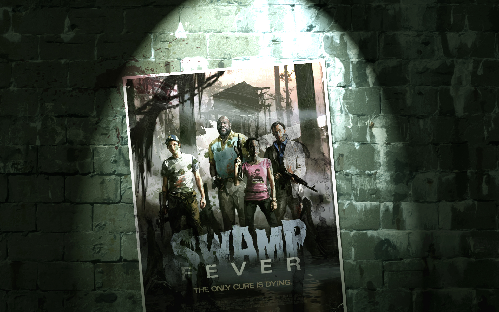
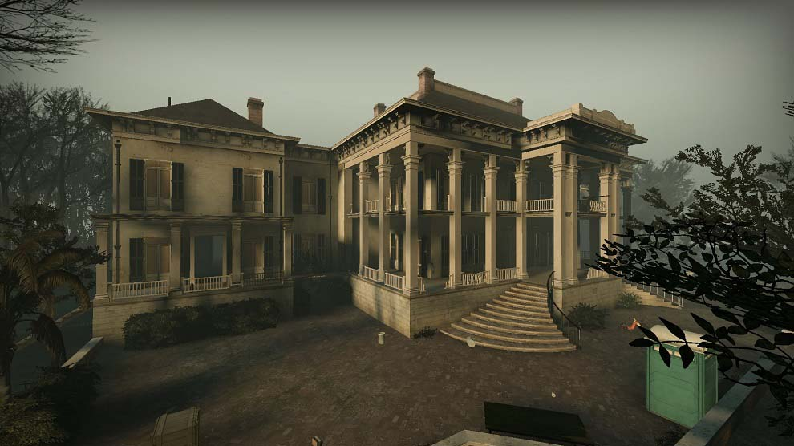

La campaña "Swamp Fever" comienza con los sobrevivientes: Coach, Ellis, Nick y Rochelle llegando a una zona pantanosa después de escapar del concierto infestado de zombis con el objetivo de cruzar el pantano y encontrar una manera de escapar.

El viaje inicia en una zona rural con montones de malesa y casas en ruinas. Los sobrevivientes deben tener cuidado de no ser atrapados en el barro o en agua estancada, a medida que los supervivientes se adentran en el pantano el entorno se vuelve más peligroso apareciendo una variante de los infectados comunes que cubren la visión del sobreviviente con lodo.
Después de cruzar el pantano, los supervivientes llegaron a un pueblo en ruinas construido sobre troncos. Los troncos están conectados por una serie de puentes y caminos de tablones, con esta inestable estructura los sobrevivientes deben atravesar el pueblo y llegar a un avión caido del otro lado del lago.
Los sobrevivientes terminan en una casa antigua donde deben defenderse de la última horda de zombis mientras esperan el rescate después de encender una radio para pedir un bote salvavidas. Cuando llega el barco de salvavidas los 4 sobrevivientes abordan el barco con dirección al sur donde el ejercito de los Estados Unidos estan terminando de hacer limpieza de infectados.
